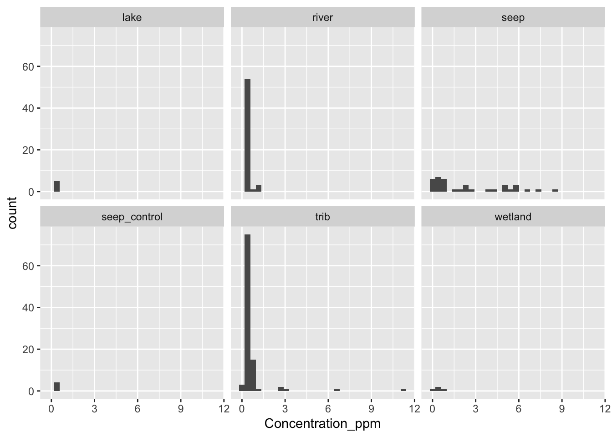
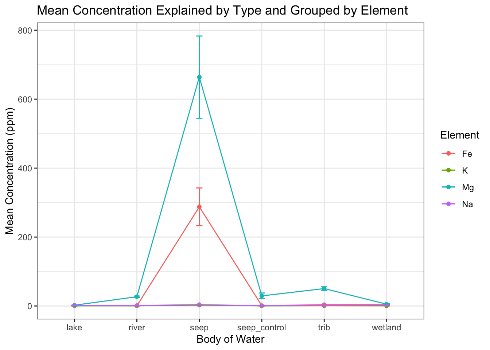
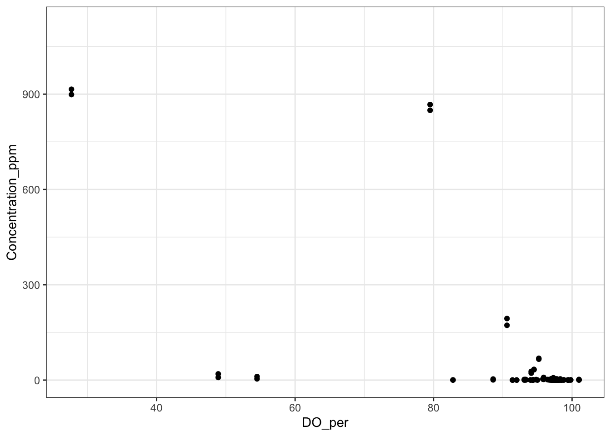
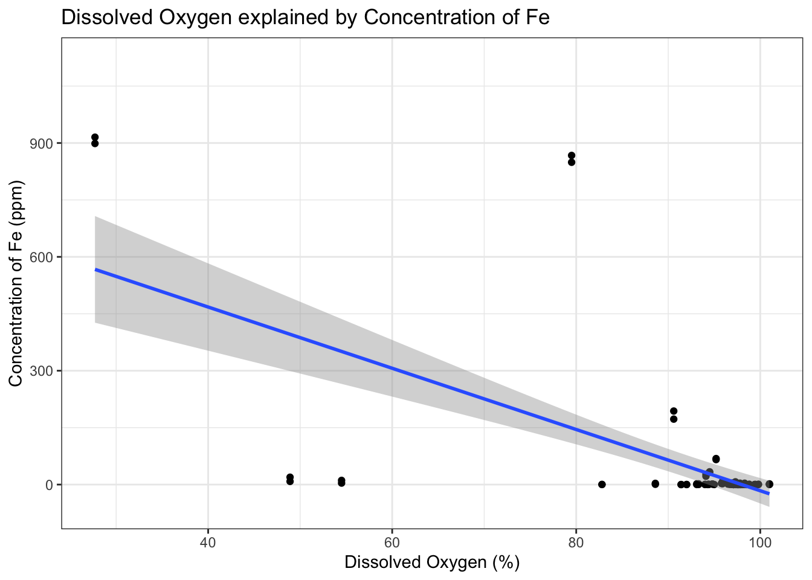

rm(list = ls())
library(tidyverse)
library(here)
library(ggfortify)
library(multcomp)
Stream = read.csv(here("Data", "Bazuro_Capstone_Final.csv"))
Stream2 = read.csv(here("Data", "Bazuro_Capstone_Final2.csv"))Final Report
Read in dataset and Packages
Set up dataset for analysis
Stream$Element <- as.factor(Stream$Element) #changes the Element variable into a factor
Stream$Type <- as.factor(Stream$Type) #changes the Type variable into a factorIntroduction
The dataset that has been used for this project examines metal concentrations and other abiotic factors in the Seep water of the Wester Brooks Range of Alaska from 2022 to 2023. The study focuses on the Salmon watershed and the community of Kiana which survive off of fish harvested from the watershed. Several nearby watershed were also sampled including Timber Creek, Tukpahlearik Creek, Salmon River, Kallarichuk River, Kobuk River, and Devil’s Lake. It specifically contains measurements of pH, conductivity, dissolved oxygen, and turbidity. The dataset 4,368 rows and 17 columns of data.
Steps for analysis
To prepare the dataset for analysis I first loaded it in and made all appropriate variables into factor variables in preparation for tidying. I then filtered out the data so that only the four elements that were necessary for analysis remained. This left the dataset with only the four necessary elements (Fe, K, Na, and Mg) and 832 rows. To prepare for the second analysis I had to filter down to just Fe, which left it with 207 rows.
Outliers
After filtering the dataset was examined for outliers and issues in normality, of which there were several in the dataset. After removing a few of the concerning outliers the dataset still had issues in normality and far more outliers which appeared to be valid data points even if they were outside of the acceptable range and had been flagged. As such, to solve this issue the analysis was run with a glm model to allow more leeway from the normality assumption. The changed dataset was then saved under the name Bazuro_Capstone_Final.csv and can be found in the data folder. The second analysis used a different dataset that was saved as Bazuro_Capstone_Final2.csv and can also be found in the data folder.
Analysis
Element Type Analysis
The analysis focused on the question: What is the effect of different habitat types on Mg, Na, Fe, and K.
The null hypothesis for the first analysis was “There is no relationship between Element, Type, and the Concentration_ppm
The alternative hypothesis for the first analysis was that: “There will be a significant relationship between Element, Type, and Concentration_ppm”
The response variable in this analysis was Concentration_ppm which is a continous variable. The predictor variables were Element and Type which were both categorical variables.
Plot and Guess relationships
Tab
Mg Plot
We already examined the plots for outliers in the Data exploration so I won’t do that here. However, I will still place a histogram here to estimate the means of each section. I will start by examining Mg
Stream |> filter(Element == "Mg") |> ggplot(aes(Concentration_ppm))+
geom_histogram()+
facet_wrap(~Type)`stat_bin()` using `bins = 30`. Pick better value with `binwidth`.Here I see no outliers and will now create a boxplot to examine the mean.
Stream |> filter(Element == "Mg") |> ggplot(aes(Concentration_ppm))+
geom_boxplot()+
facet_wrap(~Type)The mean for most graphs is close to zero, while the median in the seep is closer to 200. As such, I expect to see a significant increase in the seep compared to the other habitat types.
Na Plot
I will now examine Na
Stream |> filter(Element == "Na") |> ggplot(aes(Concentration_ppm))+
geom_histogram()+
facet_wrap(~Type)`stat_bin()` using `bins = 30`. Pick better value with `binwidth`.
Here I do see some outliers but as I have no evidence that they aren’t valid data points I will move forward.
Stream |> filter(Element == "Na") |> ggplot(aes(Concentration_ppm))+
geom_boxplot()+
facet_wrap(~Type)Based on the means I would estimate there to be several significant differences. Notably, seep_control has a lower mean than all the other habitat types. Tributary, river, and lake all appear to have similar means at 1.8 and most likely won’t be significantly different. However, wetland does have a higher mean of 2.5 and will most likely be significantly different from the other habitat types. Finally, the seep appears to have a mean of 2.3 and should be significantly different from all the types aside from the wetland.
K Plot
I will now examine K
Stream |> filter(Element == "K") |> ggplot(aes(Concentration_ppm))+
geom_histogram()+
facet_wrap(~Type)`stat_bin()` using `bins = 30`. Pick better value with `binwidth`.
Here the values are extremely close and while there are some outliers I have already trimmed out the ones that aren’t valid data points. As such I will now create a boxplot to examine means.
Stream |> filter(Element == "K") |> ggplot(aes(Concentration_ppm))+
geom_boxplot()+
facet_wrap(~Type)Based on this plot I would expect a significant difference between the seep and the other plots as it has a mean around 1 while the rest are all closer to 0.25. I would also expect a significant difference between tributary and the other plots as its outliers should significantly change its mean from the other plots.
Fe plot
I will now examine Fe
Stream |> filter(Element == "Fe") |> ggplot(aes(Concentration_ppm))+
geom_histogram()+
facet_wrap(~Type)`stat_bin()` using `bins = 30`. Pick better value with `binwidth`.I see no outliers here so I will now examine the boxplot.
Stream |> filter(Element == "Fe") |> ggplot(aes(Concentration_ppm))+
geom_boxplot()+
facet_wrap(~Type)While there are again some outliers here they shouldn’t be a concern. Based on the means I would expect to see a significant difference in only the seep as it has a mean closer to 150 while the rest are close to 0.
Create Model
mod1 = glm(Concentration_ppm ~ Type * Element, data = Stream) ##concentration_ppm explained by Type + Element. I am using a glm to prepare for any issues in normality as I found several in the exploration. I am also using an interaction term to see if the effect of the habitat or element depends on the other element/habitat in question.I have chosen to perform a two-way anova here because I want to examine the effects of two categorical predictor variables on one ratio response variable. Since my samples are both independent an Anova is the best test and will be two tailed as I mainly want to see the difference and can perform more analysis to determine the direction of the difference.
Check model assumptions
autoplot(mod1) ## create several plots, including normality and leverage, to examine the assumptions for the data.There are some visible errors in normality here but the glm should account for them so I will move forward.
Interpret Model
I will now run the anova() function to interpret the model
anova(mod1)Analysis of Deviance Table
Model: gaussian, link: identity
Response: Concentration_ppm
Terms added sequentially (first to last)
Df Deviance Resid. Df Resid. Dev F Pr(>F)
NULL 823 40653642
Type 5 6355097 818 34298545 43.809 < 2.2e-16 ***
Element 3 3107695 815 31190851 35.705 < 2.2e-16 ***
Type:Element 15 7980804 800 23210047 18.339 < 2.2e-16 ***
---
Signif. codes: 0 '***' 0.001 '**' 0.01 '*' 0.05 '.' 0.1 ' ' 1Here we can see that there is a highly significant effect of type and element on the concentration_ppm, as well as a significant interaction between the two main effects. There are 5 df for the type variable because it has 6 levels and we are calcuating n = 6 so df = n - 1 = 5. There are 3 df for element because it has 4 levels and we are calculating n = 4 so df = n - 1 = 3.
I will now run the summary() function to examine how the concentration_ppm compares to the intercept for each habitat/type interaction.
summary(mod1)
Call:
glm(formula = Concentration_ppm ~ Type * Element, data = Stream)
Coefficients:
Estimate Std. Error t value Pr(>|t|)
(Intercept) 0.93180 76.17422 0.012 0.990243
Typeriver -0.33627 79.38972 -0.004 0.996622
Typeseep 286.77074 81.15809 3.533 0.000434 ***
Typeseep_control 0.07803 114.26133 0.001 0.999455
Typetrib 2.76928 78.07412 0.035 0.971714
Typewetland 2.83875 114.26133 0.025 0.980185
ElementK -0.63014 107.72661 -0.006 0.995334
ElementMg 1.26676 107.72661 0.012 0.990621
ElementNa 0.60590 107.72661 0.006 0.995514
Typeriver:ElementK 0.45898 112.27402 0.004 0.996739
Typeseep:ElementK -284.67701 114.77487 -2.480 0.013332 *
Typeseep_control:ElementK -0.08451 161.58992 -0.001 0.999583
Typetrib:ElementK -2.39939 110.41348 -0.022 0.982668
Typewetland:ElementK -2.76143 161.58992 -0.017 0.986370
Typeriver:ElementMg 24.95801 112.35355 0.222 0.824263
Typeseep:ElementMg 374.94343 114.77487 3.267 0.001134 **
Typeseep_control:ElementMg 26.99517 161.58992 0.167 0.867365
Typetrib:ElementMg 45.52695 110.42702 0.412 0.680244
Typewetland:ElementMg 0.10374 161.58992 0.001 0.999488
Typeriver:ElementNa 0.10292 112.27402 0.001 0.999269
Typeseep:ElementNa -284.34524 114.77487 -2.477 0.013439 *
Typeseep_control:ElementNa -1.07162 161.58992 -0.007 0.994710
Typetrib:ElementNa -2.76281 110.42702 -0.025 0.980046
Typewetland:ElementNa -1.90860 161.58992 -0.012 0.990579
---
Signif. codes: 0 '***' 0.001 '**' 0.01 '*' 0.05 '.' 0.1 ' ' 1
(Dispersion parameter for gaussian family taken to be 29012.56)
Null deviance: 40653642 on 823 degrees of freedom
Residual deviance: 23210047 on 800 degrees of freedom
AIC: 10831
Number of Fisher Scoring iterations: 2Our intercept here is the ElementFe predictor which is significantly different from the seep type and the three other elements when they are in the seep.
phc1 <- glht(mod1, linfct = mcp(Type = "Tukey", Element = "Tukey"))Warning in mcp2matrix(model, linfct = linfct): covariate interactions found --
default contrast might be inappropriate
Warning in mcp2matrix(model, linfct = linfct): covariate interactions found --
default contrast might be inappropriatesummary(phc1)
Simultaneous Tests for General Linear Hypotheses
Multiple Comparisons of Means: Tukey Contrasts
Fit: glm(formula = Concentration_ppm ~ Type * Element, data = Stream)
Linear Hypotheses:
Estimate Std. Error z value Pr(>|z|)
Type: river - lake == 0 -0.33627 79.38972 -0.004 1.00000
Type: seep - lake == 0 286.77074 81.15809 3.533 0.00632 **
Type: seep_control - lake == 0 0.07803 114.26133 0.001 1.00000
Type: trib - lake == 0 2.76928 78.07412 0.035 1.00000
Type: wetland - lake == 0 2.83875 114.26133 0.025 1.00000
Type: seep - river == 0 287.10700 35.83769 8.011 < 0.001 ***
Type: seep_control - river == 0 0.41429 88.05314 0.005 1.00000
Type: trib - river == 0 3.10555 28.16510 0.110 1.00000
Type: wetland - river == 0 3.17502 88.05314 0.036 1.00000
Type: seep_control - seep == 0 -286.69271 89.65078 -3.198 0.02054 *
Type: trib - seep == 0 -284.00145 32.82041 -8.653 < 0.001 ***
Type: wetland - seep == 0 -283.93199 89.65078 -3.167 0.02275 *
Type: trib - seep_control == 0 2.69126 86.86884 0.031 1.00000
Type: wetland - seep_control == 0 2.76072 120.44202 0.023 1.00000
Type: wetland - trib == 0 0.06947 86.86884 0.001 1.00000
Element: K - Fe == 0 -0.63014 107.72661 -0.006 1.00000
Element: Mg - Fe == 0 1.26676 107.72661 0.012 1.00000
Element: Na - Fe == 0 0.60590 107.72661 0.006 1.00000
Element: Mg - K == 0 1.89690 107.72661 0.018 1.00000
Element: Na - K == 0 1.23604 107.72661 0.011 1.00000
Element: Na - Mg == 0 -0.66086 107.72661 -0.006 1.00000
---
Signif. codes: 0 '***' 0.001 '**' 0.01 '*' 0.05 '.' 0.1 ' ' 1
(Adjusted p values reported -- single-step method)Here we can see that there is a significant effect between seep_control and lake, seep and river, tributary and seep, and wetland and seep.
Replot to show Relationships
I will now create a plot using the means and std errors of each of the commbinations.
sum_stream <- Stream |> group_by(Element, Type) |> summarise(
mean_Concentration = mean(Concentration_ppm),
se_Concentration = sd(Concentration_ppm)/sqrt(n())
)`summarise()` has grouped output by 'Element'. You can override using the
`.groups` argument.sum_stream# A tibble: 24 × 4
# Groups: Element [4]
Element Type mean_Concentration se_Concentration
<fct> <fct> <dbl> <dbl>
1 Fe lake 0.932 0.104
2 Fe river 0.596 0.139
3 Fe seep 288. 54.7
4 Fe seep_control 1.01 0.751
5 Fe trib 3.70 0.803
6 Fe wetland 3.77 1.79
7 K lake 0.302 0.0520
8 K river 0.424 0.0278
9 K seep 2.40 0.410
10 K seep_control 0.295 0.0365
# ℹ 14 more rowsggplot(sum_stream, aes(x = Type, y = mean_Concentration, colour = Element, group = Element)) +
geom_point() +
geom_line() +
geom_errorbar(aes(ymin = mean_Concentration - se_Concentration,
ymax = mean_Concentration + se_Concentration), width = 0.1) +
labs(title = "Mean Concentration Explained by Type and Grouped by Element", x = "Body of Water", y = "Mean Concentration (ppm)") +
theme_bw()
Results
Overall, we reject the null hypothesis that there was no relationship between Element, Type, and the Concentration_ppm. As we found that the Element (F = 35.705, p = 2.2 E-16) Type (F = 43.809, p = 2.2e -16), and Interaction (F = 18.339, p = 2.2e-16) had a significant and positive effect on the Concentration_ppm. Our specific significant results were between seep_control and lake, seep and river, tributary and seep, and wetland and seep.
DO_Per Analysis
The analysis focused on the question: Is there a difference in DO_per for different Concentration_ppm of Fe?
The null hypothesis for the second analysis was “There is no relationship between the Concentration_ppm of Fe and the DO_per.
The alternative hypothesis for the second analysis was “There will be a significant relationship between the Conectration_ppm of Fe and the DO_per.
The response variable was DO_per
Plot and Guess Relationships
I will begin by making a boxplot of the data
ggplot(data = Stream2, aes(y = DO_per)) +
geom_boxplot(outlier.color = "red")Warning: Removed 114 rows containing non-finite outside the scale range
(`stat_boxplot()`).I can see several outliers but there is no reason to doubt that they are valid data so I will leave them in.
I will also make a histogram to check the data
ggplot(data = Stream2, aes(y = DO_per)) +
geom_histogram()`stat_bin()` using `bins = 30`. Pick better value with `binwidth`.Warning: Removed 114 rows containing non-finite outside the scale range
(`stat_bin()`).Again while there are outliers I will be leaving them in as they are valid data points and could offer imortant conclusions to my data.
As these are both continuous variables I will create a scatterplot to examine the mean and intercept.
ggplot(Stream2, aes(x = DO_per, y = Concentration_ppm)) +
geom_point() +
theme_bw()Warning: Removed 114 rows containing missing values or values outside the scale range
(`geom_point()`).
Here the intercept is near 50 with a negative slope of slope of less than one . However, the large spread leads me to expect that there won’t be a significant association between the two.
Create Model
I will now create the model that I will be using for this analysis.
mod2 = glm(Concentration_ppm ~ DO_per, data = Stream)I have chosen to use a regression here as I am examining a ratio response variable along with a continous predictor. Since there is only a single predictor a regression is ideal. However, I have chosen to use glm() instead of lm() to deal with any normality issues generated by the outliers.
Check model assumptions
I will now run the autoplot() function to examine the conditions.
autoplot(mod2)As mentioned above the normality issues are present but should be fine with the glm() model that is being used.
Interpret Model
I will now run the anova() function to interpret the model
anova(mod2)Analysis of Deviance Table
Model: gaussian, link: identity
Response: Concentration_ppm
Terms added sequentially (first to last)
Df Deviance Resid. Df Resid. Dev F Pr(>F)
NULL 368 5817529
DO_per 1 545665 367 5271864 37.986 1.877e-09 ***
---
Signif. codes: 0 '***' 0.001 '**' 0.01 '*' 0.05 '.' 0.1 ' ' 1Based on this plot I can see that there is a significant association between the DO_per and Concentration_ppm (F = 37.986, p = 1.877e-09)
I will now run the summary() table for closer examination
summary(mod2)
Call:
glm(formula = Concentration_ppm ~ DO_per, data = Stream)
Coefficients:
Estimate Std. Error t value Pr(>|t|)
(Intercept) 288.0625 42.3786 6.797 4.33e-11 ***
DO_per -2.8008 0.4544 -6.163 1.88e-09 ***
---
Signif. codes: 0 '***' 0.001 '**' 0.01 '*' 0.05 '.' 0.1 ' ' 1
(Dispersion parameter for gaussian family taken to be 14364.75)
Null deviance: 5817529 on 368 degrees of freedom
Residual deviance: 5271864 on 367 degrees of freedom
(455 observations deleted due to missingness)
AIC: 4583.4
Number of Fisher Scoring iterations: 2Here we can see that the slope for this is around -2.8 and the intercept appears to be at 288. This is a steeper plot than my expectations.
Replot to show Relationships
ggplot(Stream2, aes(x = DO_per, y = Concentration_ppm)) +
geom_point() +
geom_smooth(method = "glm") +
labs(title = "Dissolved Oxygen explained by Concentration of Fe", x = "Dissolved Oxygen (%)", y = "Concentration of Fe (ppm)") +
theme_bw()`geom_smooth()` using formula = 'y ~ x'Warning: Removed 114 rows containing non-finite outside the scale range
(`stat_smooth()`).Warning: Removed 114 rows containing missing values or values outside the scale range
(`geom_point()`).
Results
Challenges
Overall challenges
The main part of my project that I had to learn was how to deal with outliers and issues with normality. There was a large number of outliers in my data but the vast majority of them were valid data points which could not be reasonably ignored. As such, my analysis had to be performed in a manner which used a more robust model, which was done through the use of glm.
Challenges in analysis 1
The main difficulties came in how I had to perform a tukeyHSD on a glm with multiple predictor variables. This wasn’t covered in class and required me to dig through the multcomp package to determine the proper code and setup. Even with the information I found in the multcomp package I was only able to make a model with both the predictor variables without the interaction effect. I was also unable to use the cld() function to give myself an easy to read final result to the TukeyHSD as it simply gave an error. This analysis was particularly difficult as it was based off two response variables which required subtle changes to several parts of my analysis as most of the code we learned in class was tailored to use on a single predictor variable. This caused my analysis to run much longer than most of those done in class as I had to check normality and outliers in each of my Element levels.
Challenges in analysis 2
When I started analysis 2 my overall question was very different and had to be trimmed down to a simpler question as due to the structure of the data it would be impossible to look at more than one element without running an ANCOVA, which would be on top of using the glm model to account for the issues in normality.